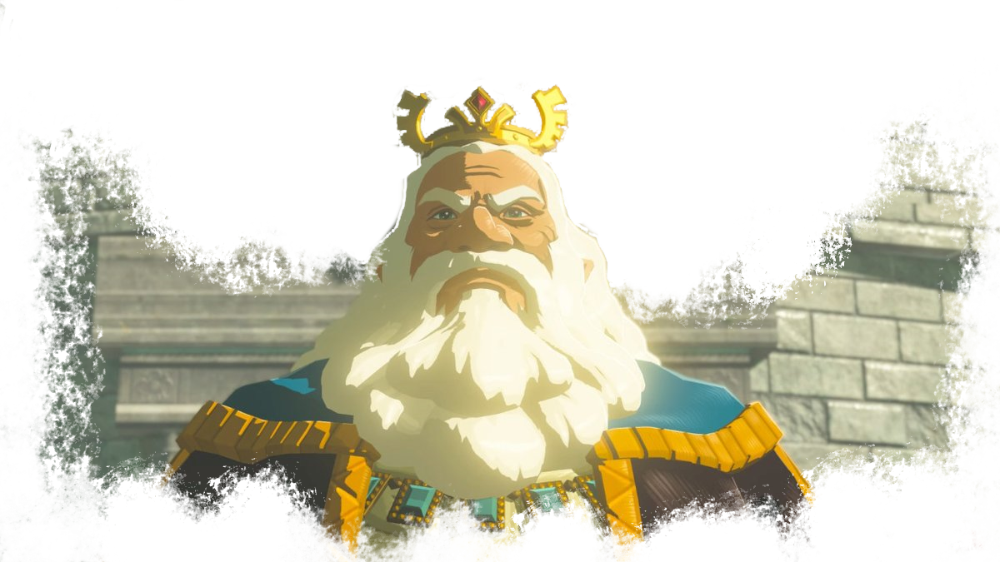
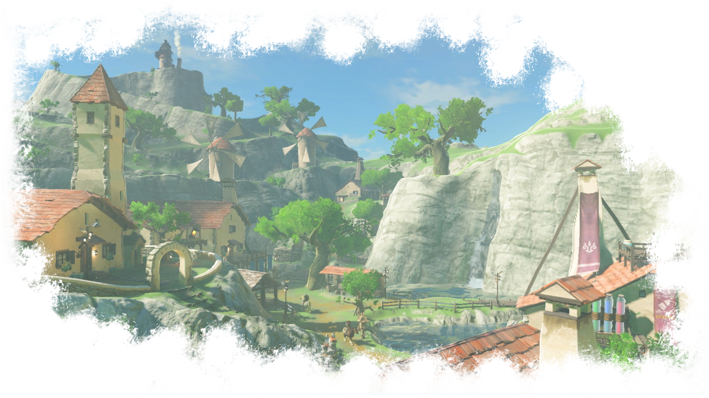

Les Hyliens

Les Hyliens sont le peuple le plus représenté en Hyrule. Très similaires aux humains, la principale distinction physique vient de leurs oreilles pointues, qu'on prétend capable d'entendre les voix des Dieux. Le Hyliens et les humains vivent très bien ensemble, et on appelle parfois les hyliens humains. C'est pourquoi nous n'évoquerons pas les humains ici.
Les hyliens vivent partout dans la région et sont polyvalents. Aussi bien voyageurs que marchands, certains sont même alchimistes et créent des potions.
Depuis la résurection de Ganon le fléau et le cataclysme qui s'en est suivi, la population hylienne a drastiquement diminué. Beaucoup de maisons sont maintenant des ruines inhabitables, et un bon nombre d'hyliens sont devenus des nomades. Toutefois, il existe encore quelques villages hyliens qui ont été plus ou moins bien épargnés par le retour de Ganon.

Les hyliens (en tout cas certains d'entre eux), sont capable d'utiliser la magie. Ils sont également habiles à l'épée, mais également de bons archers. La garde royale, essentiellement composée d'hyliens, était aussi redoutable que polyvalente.
Les hyliens sont d'excellents forgerons. En effet, certaines de leurs armes que Link peut trouver sont peut-être les plus puissantes de la région, comme par exemple le bouclier hylien, qui n'a pas son pareil en terme de défense, mais également de résistance.
Les hyliens sont un peuple profondément pacifique et s'entendent bien avec les autres races. Les gerudo ont parfois tendance à les intimider à cause de leur culture guerrière, mais aucune autre culture n'est rejetée. et l'harmonie existe sur le plan "géopolitique".